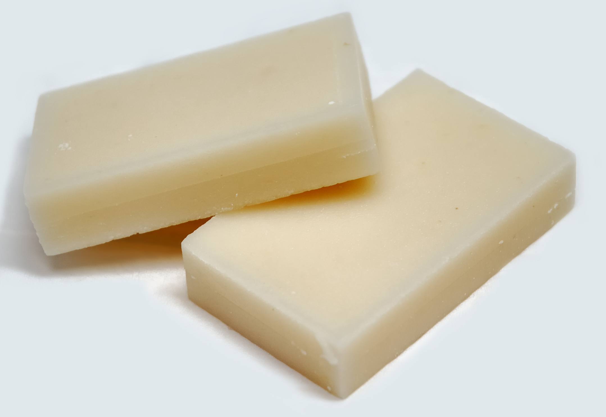

Mochi

This is an example of the mochi we will be making today. It looks like a bar of soap but it isn't. It is mochi and it is really easy to make even though it looks really bad. I really love mochi. Mochi ice cream is really good but this is not what we are making today. Today we are making really easy mochi that does not contain ice cream. It will be so yummy. Wow. Yum. SOOOOO YUMMY
Ingredients:
- 1 box (1lb) sweet rice flour
- 1 14-oz can sweet coconut milk
- 1 cup white sugar
- 2 cups water or milk
- food coloring
- corn or potato starch
Steps:
- Mix together all ingredients except for the corn or potato starch
- Prepare a 9x13 pan by spraying it with oil or greasing the bottom with butter.
- Pour your mochi mixture into the pan and bake at 350°F for 1 hour
- Wait for the mochi to cool completely.
- Dust cooled mochi with the corn or potato starch
- Cut into squares and serve